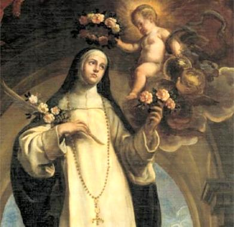

"SANTA ROSA DE LIMA"

"MULHER EXTRAORDINÁRIA, QUE SOUBE VIVER OS ENSINAMENTOS EVANGÉLICOS EM PLENITUDE HERÓICA, BUSCANDO SEMPRE SERVIR E AJUDAR OS MENOS FAVORECIDOS"
=ÍNDICE=
- APRESENTAÇÃO
- FAMÍLIA E SANTIDADE
- ALCANÇANDO A IMORTALIDADE
- CONVITE + E-MAIL + FIRMAS DE BUSCA


 -
CONVITE + E-MAIL + FIRMAS DE BUSCA
-
CONVITE + E-MAIL + FIRMAS DE BUSCA